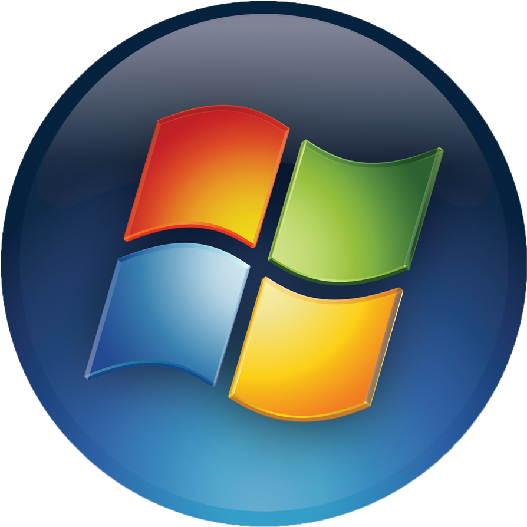
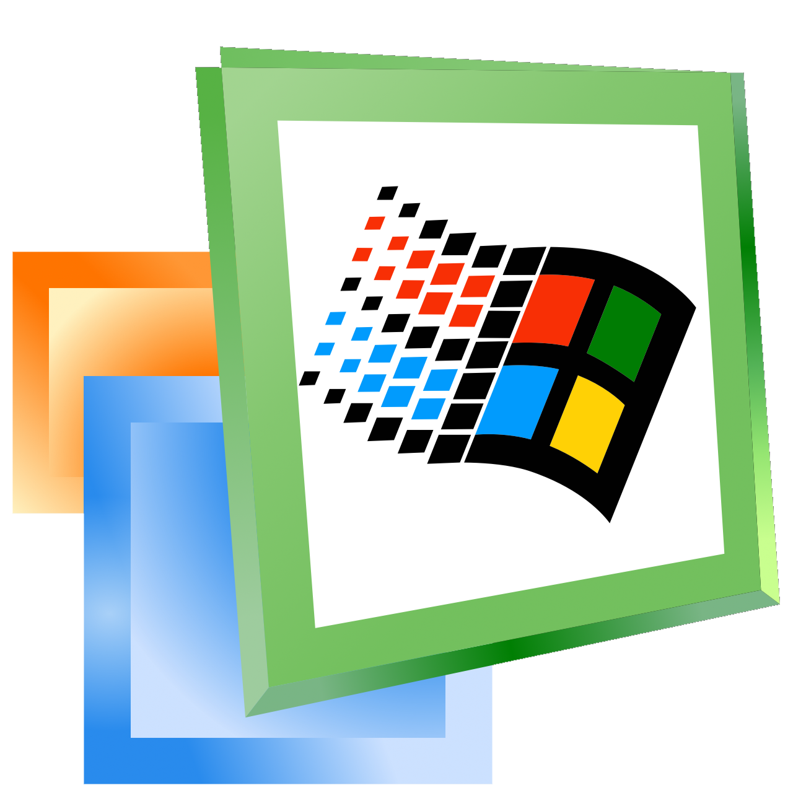
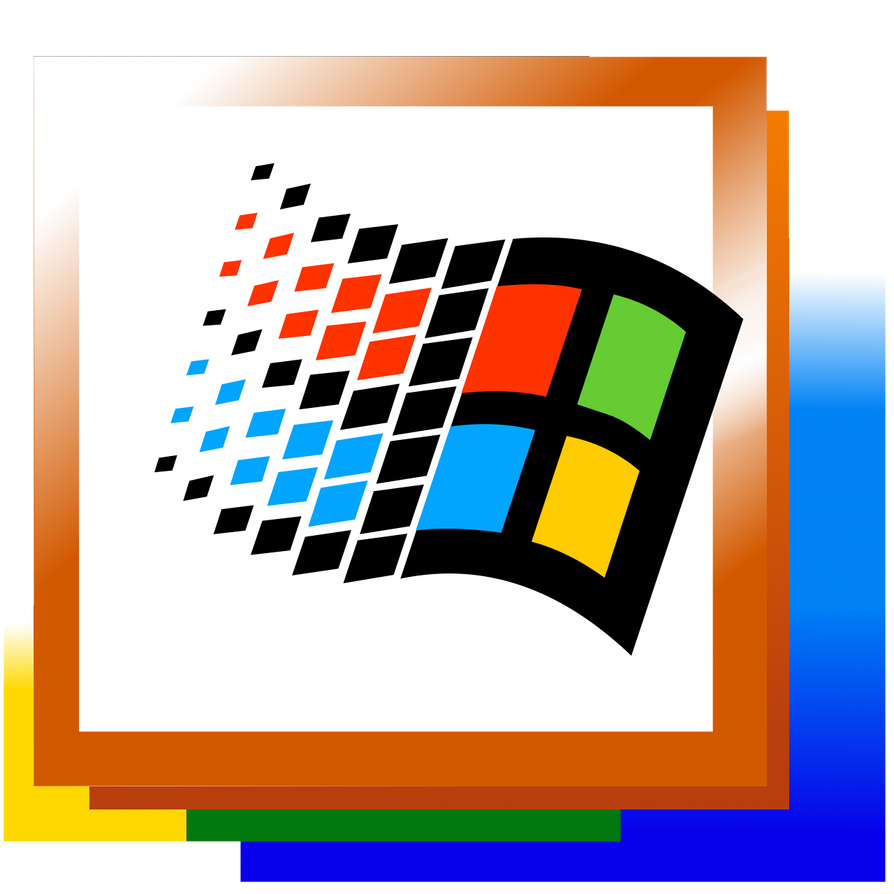
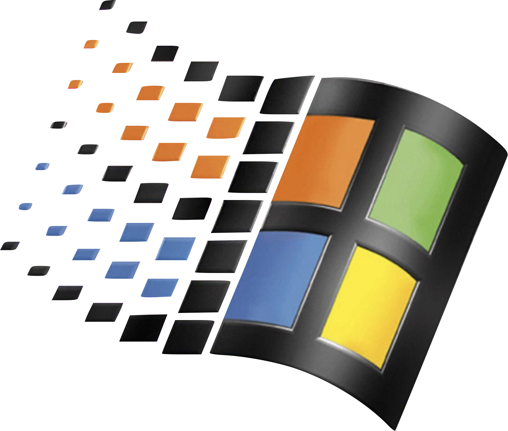
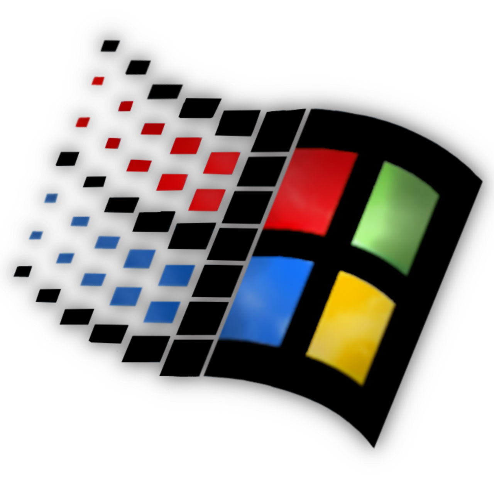
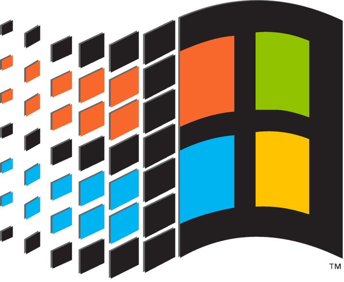
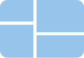
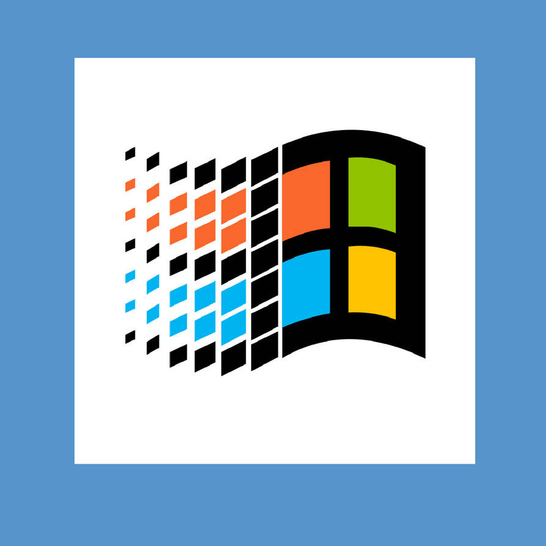

Windows 11
Nowoczesny system z nowym wyglądem – Windows 11 w wersji ISO.
📥 8 905 pobrań
Pobierz

Windows 10
64-bitowy obraz ISO systemu Windows 10.
📥 12 340 pobrań
Pobierz

Windows 8.1
System, który był "aktualizacją" Windows 8.
📥 10 847 pobrań
Pobierz
Windows 8
Nowoczesny interfejs MetroUI do twojej dyspozycji!
📥 5 195 pobrań
Pobierz

Windows 7
Klasyczny system Windows 7 w wersji Ultimate – ISO 64-bit.
📥 21 432 pobrania
Pobierz

Windows Vista
Windows Vista (pierwszy system z Aero) – ISO 64-bit.
📥 2569 pobrań
Pobierz

Windows XP
Legendarna wersja systemu – Windows XP SP3 w formacie ISO.
📥 42 069 pobrań
Pobierz

Windows Millenium Edition (ME)
Wersja, która miała być ulepszeniem 2000... no i wyszła z tego klapa!
📥 3 206 pobrań
Pobierz

Windows 2000
Głowna wersja systemu NT w wersji ISO do pobrania.
📥 5602 pobrań
Pobierz

Windows 98
Klasyczny Windows 98 w wersji ISO 32-bit.
📥 7 064 pobrań
Pobierz

Windows NT 4.0
Windows NT 4.0 z 1996 r. w wersji ISO.
📥 9 056 pobrań
Pobierz

Windows 95
Pierwszy Windows z paskiem zadań i pulpitem!
📥 9 964 pobrań
Pobierz

Windows 3.1
Pierwszy Windows dostępny w polskiej wersji językowej
📥 7 606 pobrań
Pobierz

Windows 3.0
Podobny do Windows 3.1, ale bez języka polskiego!
📥 6 102 pobrań
Pobierz
Windows 2.0
Pierwszy Windows z nakładającymi się oknami w formacie IMA
📥 4 287 pobrań
Pobierz
Windows 1.01
Pierwszy Windows, jaki kiedykolwiek powstał!
📥 6 274 pobrań
Pobierz

Strefa Windows BETA
Zobacz wersje BETA systemów Windows
Zobacz

Strefa Server
Systemy Windows z funkcjami serwerowymi
Zobacz